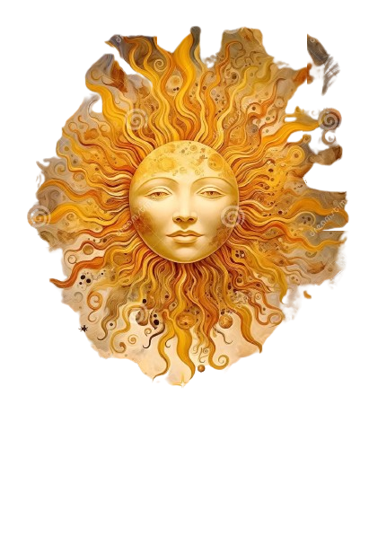

The Shattered Crown
A tale of light, shadow, and the forest that remembers everything


A tale of light, shadow, and the forest that remembers everything

Five hundred years ago, the Celestial Crown, an artifact forged from both light and shadow, as shattered during the War. The world split into two realms: the Luminous Kingdoms bathed in eternal daylight, and the Shadowed Territories cloaked in endless night. The ancient forest that once united them became a gruesome borderland where both forces clash.
Now, two young women stand at the heart of an ancient prophecy. Amara, born of the light kingdoms, discovers she can wields shadow magic a forbidden power that marks her as cursed. Aria, raised in the darkness, finds herself touched by light a trait that makes her an outcast among her own people.
Drawn together by fate and the awakening of the crown's seven fragments, they must choose: Will they unite the shattered pieces and restore balance to the world? Or will the repelling forces of light and shadow tear them and their world apart forever?
The gods wove light and shadow together, creating the Celestial Crown. It chose Queen Raleigh as its first bearer, and for three centuries, the world knew only balance. Day and night danced in perfect rhythm, and magic flowed freely between both forces.
Two corrupted sorcerers one seeking pure light, one seeking absolute darkness joined forces and attempted to steal the crown. They believed the world should be ruled by a single force. Their war tore the kingdoms apart.
During the final battle, Queen Rayleigh shattered the crown herself rather than let either sorcerer claim it. With her final magic strength she put a spell that two girls born on in light but dark and on in dark but light would restore their world again. Then the world split into five kingdoms. Two trapped in eternal day, two in eternal night and one lost to the people. The ancient forest became a twisted borderland where neither force holds sway. The sorcerers angryily hid the truth burning history books and re writting them to read, the spell as a curse and sin that can only be forgiven by execution.
Born in Solara under the brightest sun in a century. At age sixteen, shadow magic manifested within her a forbidden power. She fled into the forest to escape execution.
Born in Umbral Deep, trained in void magic. When light sparked from her fingertips during a ritual, she was branded a heretic and hunted down for execution. She too fled to the forest, where she met Amara.
The seven fragments of the crown begin to pulse with power. The prophecy speaks of twin souls who will either unite them or let the world fall. Amara and Nyx must decide: trust each other, or fall to the forces hunting them both.
After the crown shattered, the world split into five distinct kingdoms two bathed in eternal light, two shrouded in perpetual darkness, one untouched:
Ruled by warrior-priests who worship the sun. Their golden spires never see nightfall. Magic here flows from divine light, and their people know nothing of shadows. Amara was born here.
A kingdom of scholars and celestial mages. Their floating libraries orbit above the clouds, lit by eternal starlight. They study the fragments obsessively, believing knowledge will restore the crown.
The ancient forest that once connected all kingdoms now exists in perpetual twilight—neither fully light nor shadow. Home to druids, outcasts, and creatures caught between worlds. The only place where both Amara and Nyx can meet without being hunted.
A kingdom where darkness is absolute. Ruled by shadow-weavers and void-walkers. Their cities exist in caves and underground labyrinths lit by bioluminescent fungi. Nyx was raised here.
Once a coastal empire, now submerged in eternal dusk. Ruled by necromancers and bone-sailors who command ghost ships. They believe the crown should remain shattered, as it grants them power over the dead.
Magic in Eclipsed Realms is divided into three schools:
Drawn from the stars and sun. Used for healing, protection, and divine power. Wielders are called Luminarchs. Since the crown shattered, celestial magic has grown weaker.
Drawn from the void and the spaces between worlds. Used for stealth, illusion, and necromancy. Wielders are called Umbramancers. Shadow magic has grown wild and unpredictable.
Drawn from the natural world—earth, water, fire, air. The oldest and most stable form of magic. Druids and shamans can still wield it without corruption.
The Corruption: Since the crown shattered, using light or shadow magic without balance causes physical corruption. Mages who rely too heavily on one type slowly transform into creatures of pure light or shadow.
"When light bears shadow, and shadow bears light,
When twin souls meet in the forest's twilight,
Seven fragments scattered, seven paths converge,
To unite the crown... or let the world submerge."
The prophecy was written by the Oracle of Aethermoor moments before the crown shattered. It speaks of two individuals one born of light who carries shadow, one born of shadow who carries light.
Amara - The Light Bearer: Born in Solara, blessed by the sun... until the day shadow magic awakened within her at age sixteen. Now hunted by her own kingdom as an abomination.
Nyx - The Shadow Touched: Raised in Umbral Deep, trained in void magic... until she discovered she could conjure light. Branded a traitor and forever hunted from the darkness.
Three Possible Endings:
1. Rayleigh's Last breath: Amara and Nyx unite the seven fragments and restore the crown, merging light and shadow into balance once more.
2. Evil Twins: They destroy the fragments entirely, freeing the world from the crown's influence but allowing chaos to reign.
3. Sorcerers Whisper: They each take fragments of their opposing element, becoming new gods one of pure light, one of pure shadow—and the war begins anew.
Once the most brilliant mage in the kingdom of Lumeria, Malachar served Queen Celestria as her chief advisor. He was a master of both light and shadow magic—a rare gift.
But ambition corrupted him. He believed the crown's power was wasted on the queen, who used it only for peace and healing. Malachar wanted to reshape the world, to eliminate weakness and suffering through absolute control.
When his betrayal was discovered, he waged war across all five kingdoms. The War of Broken Stars lasted fifty years and cost millions of lives.
The Sealing: Queen Celestria used the last of her power to seal Malachar in the Void Between Worlds. But the seal is weakening. Some believe that when all seven fragments awaken, Malachar will return.
Warning: There are whispers that Malachar's followers the Cult of the Eclipsed Hand are searching for the fragments to free their master.